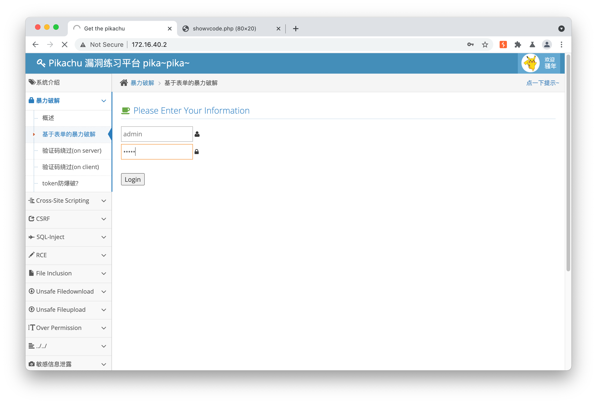

此文章为 Klee-CTF 专题
准备资料
弱密码资料：https://github.com/danielmiessler/SecLists/tree/master/Passwords/Common-Credentials
暴力破解
基于表单的破解
使用 burpsuite ，一般用户名使用admin，密码可以通过burpsuite破解

首先输入 admin admin 构造一个请求


清除一下无关参数，只保留 password
回到burpsuite，发现有一个payload的长度明显有点问题

输入测试，诶成了

验证码绕过 (on server)
对网络请求，提取出关键，发现当且仅当访问 http://172.16.40.2/pikachu/inc/showvcode.php 时，验证码才会发生改变，连续curl以下内容时，验证码是始终保持有效的
1 | curl 'http://172.16.40.2/pikachu/vul/burteforce/bf_server.php' \ |
接下来的操作步骤和上面一致。
反射型xss（get）/ 存储型xss
https://segmentfault.com/a/1190000021899373
在message内写入
1 |
|
可修改 sex，phonenum，add等参数，并通过ajax无感知地修改用户的数据。不行就整个链接嘛，或者window.open
直接javascript，
1 | fetch("http://192.168.44.128:8080/vul/csrf/csrfget/csrf_get_edit.php?sex=2&phonenum=2&add=2&email=2&submit=submit") |
post同理，可以用form构造
网站源码？拿来吧你，随便找个html套上然后改一下这个action为目标页面就可
1 | <form method="post" action="http://192.168.44.128:8080/vul/csrf/csrfget/csrf_get_edit.php"> |
搜索型注入
输入 a' or 1=1 # 即可匹配所有用户， %% 也行，%是通配符

基于 boolian 的盲注
当你已经知道了数据库中存在一个为kobe的用户，这里相当于一个判断语句只能给你返回是或否，注入可以利用其判断语句+判断字符来判断其完整字符串。
比如此处输入 kobe，可以正常地返回其信息
而输入 kobe' and 1=1# 也可以， kobe' and 1=2# 就不行了
但其他 MySQL 语句还是可以执行的嘛！不知道其他信息，靠判断猜！
比如说，MySQL里面有select, substr, ascii等语句，可以通过逐字符判断来判断其数据库名
基于时间的盲注
原理其实和上面差不多，也是利用信息来判断信息，只不过这里利用的是睡眠时间，使用判断条件+sleep(x)，满足条件的时候睡眠x秒
1' or sleep(3)# 来测试，sleep()可用
比如说我们在数据库中使用 select if (database()='pikachu', sleep(5), 1) ，使用了五秒，可以判断当前数据库名称为 pikachu
exec “ping”
笑死，他的docker上没有ping，但是其他命令可以执行
;whoami;ls;pwd ，是没有对输入ip进行过滤

File Inclusion(remote)
我这里没开 allow_url_include，所以就不演示了，但远程可以构造一个txt文件，里面写
1 | <?php |

Unsafe Filedownload
查看链接格式
http://192.168.44.128:8080/vul/unsafedownload/execdownload.php?filename=kb.png
容易得知这个filename可以利用，修改为execdownload.php，404，应该图片被放在子目录了，那就修改为../execdownload.php，成功获取
http://192.168.44.128:8080/vul/unsafedownload/execdownload.php?filename=../execdownload.php

Unsafe Fileupload→client check
F12 直接把这个去掉，好像不行

用burpsuite拦截响应请求把这个给去掉，重新上传，getdaze


Over Permission
查看提示，使用 pikachu/000000 登录，发现只有查看权限

使用admin/123456登录，发现有添加权限，地址为
http://192.168.44.128:8080/vul/overpermission/op2/op2_admin_edit.php
回到pikachu，同样访问上面地址，发现可以正常访问

也可以正常添加
../../→目录遍历
用了哪些函数类型？
随便点击一个，发现地址有关键字 xxx.php

作死试试 ../../../index.php ，笑死，还套娃了

敏感信息泄露→IcanseeyourABC
F12查看，嚯哟这有个账号


登陆成功
PHP 反序列化
构造PHP payload
1 |
|
不过我猜测，这个类名和参数名有一个没猜对都没法用吧？


XXE漏洞
我看不懂，但我大受震撼.jpg
参考资料 https://www.freebuf.com/vuls/265859.html
根据文章，可以构造一个这样的恶意payload来获取任意文件内容
1 | <?xml version = "1.0"?> |

然后可以获取到 /etc/passwd 的内容了
URL 重定向
@某佛大SSO
http://192.168.44.128:8080/vul/urlredirect/urlredirect.php?url=https://baidu.com
SSRF(curl)
这个curl可以用作访问仅限内网访问的应用，比如docker之间

复盘
搜索型注入中 两个%是为了闭合，补充union等知识（比赛时一般都只能手工注入）

https://www.yuque.com/docs/share/a9f3ca4d-b032-46ab-ad68-459e0177d911?#37039777
https://www.yuque.com/docs/share/6d18cc14-f0de-4b5f-aebe-6543304e48b1?#
XSS 是怎么实现反弹的
实例源码：https://github.com/orangetw/My-CTF-Web-Challenges/blob/master/hitcon-ctf-2020/oStyle/bot.py
1
2
3
4
5
6client = webdriver.Chrome('./chromedriver', chrome_options=chrome_options)
client.add_cookie({
'name': 'this-is-for-you',
'value': FLAG,
})一般可以通过 chromedriver 模拟访问来实现 xss 反弹，在访问的时候添加上 cookie 里的 flag
PHP 反序列化 https://xz.aliyun.com/t/6753